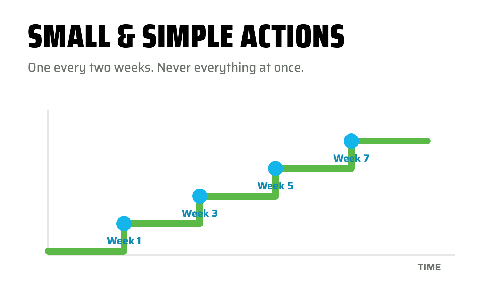

The tools, the software, the expectations of customers and staff, all of it is moving faster than any programme written last year. So I do not sell a system. I mentor small trade businesses through what is changing: how the work runs, how you stay calm inside it and where AI honestly helps. One small piece at a time and we keep what works.

Everything here is done the lean way — small, simple, one thing at a time, improved after it has been used on a real job. Not a course you enrol in and work through in order.
Small trade businesses don't get a manager, an office or a board, their bookkeeper is the only person looking at the whole business every month. Doing that across a lot of small trade businesses, I see where the time and the money leak out. Exploring Tradie is what I have made of that and it is why I only mentor small trades.
The Kaizen and lean tools — the eight wastes, 5S, the five whys, used on a job you have just finished, not taught from a slide. Where did the hours go that you did not invoice?
Read more →Fewer open loops in your head. A month end that is a habit, not a crisis. Knowing what is owed and what is due without checking your phone at 10pm. Zen is a big word for it; the practice is small and daily.
Read more →The job from first call to final invoice, written down so it does not live in your head — and so the next person can do it. Fewer tools, used properly: Xero, payroll, job software, email.
Read more →Where AI genuinely helps a two-person trade business and where it is noise. Set up for your business, with your own instructions and the lean rule, so it works for you instead of adding another thing to keep up with.
Read more →Your own P&L and balance sheet read line by line and why a profitable month can still leave the account short. A mentor who is also inside your Xero has a different conversation from one who is not.
Read more →The open thread. Build your North Star, learn the Kaizen words, look at where the owner is the bottleneck and how a small crew grows its culture. For when you are not sure which thread applies, or you already think in systems and want the framing.
Common small business challenges →As we explore a problem in mentoring I teach the lean (Kaizen) tool that fits it, on your own job and give you a handout so you can keep going on your own. One tool used on a real job of yours is worth more than six understood. The Kaizen Tradie book below covers all six.
You have heard the pitch. Fifteen minutes of marketing a day, ten times the business, you on a beach. You already know it is not true. What nobody tells you is what the real work actually looks like.
It looks like this. A business you can step back from is a process business: many small steps, each one standardised, all lined up under one goal. A ladder. You do not jump to the top and you do not need to. You climb one rung, stand on it until it holds, then the next.
That is what Kaizen is for. It names the rungs and it gives you the order. My job is to name the problem with you, help you see what you are climbing for and then break the climb into steps you can actually take between jobs. Steps, decisions and a framework to make them with. Nothing else works and I will not tell you otherwise.
Not sure where to begin? Answer four quick questions about your business and I will hand you one Kaizen tool, the reason, the page of the book and a prompt written for your own AI. It takes a minute. It is rung one of the ladder.
What is bugging you, how many of you, where the job lives and who on your crew thinks this way. Then one tool, not six.
The Kaizen Tradie book is the reference: every tool, a page each, how I use it, an AI prompt for each. Efficient Tradie is a case study: the eight wastes applied to one leak, the hours and margin nobody back-costed, walked through a demo builder over four steps. More case studies follow for the tradies who work with me.
Thirteen pages. Every tool, a page each: what it is, how I use it in my own business and an AI prompt so you can teach yourself. Start with 5S. Includes the glossary.
Where did the hours go that you did not invoice? One demo builder, four steps two weeks apart: name the wastes, 5S the job software, back-cost one job, make it the habit.
Open the handout →Fourteen years in the books, eight as Admin for Tradies and I have owned a trade business and run its admin myself. For seven years I have been a volunteer mentor with Business Mentors New Zealand, working with trade and service businesses across the country. A Diploma in Lean Systems, a Master in Business and a Diploma in Accounting. That is the mix Exploring Tradie comes out of and I explore the AI side every working day, building the tools I use.
What is mentoring? In Business Mentors NZ's words: mentoring is a supported system where one person shares their skills, knowledge and experience to assist others to grow and develop.
A business coach or consultant works from what you tell them. I work from what is actually in your Xero and your workflows, every month, which is also where you find out where AI helps and where it is best left to a human. In the AI age you have to be on the ground using it. That is a different conversation.
A handful of businesses at a time, properly. Same person every session, no programme, no upsell.
Local and happy to sit at your table. Most of the work happens on a screen we are both looking at, so small tradies anywhere in New Zealand book the same way.
What I am seeing in small trade businesses, one Kaizen tool used properly, what I am building with AI and what did not work, a Xero change worth knowing and one podcast or link worth a drive to site. Plain words. No fluff, no selling, no financial advice. Unsubscribe any time.
These are the words I use in sessions. Once you have them, you can see the problem and then you can change it.
It is mentoring, not coaching. A coach works from what you tell them; Monique works from what is in your Xero and your workflow every month. Two-hour sessions on your own business, $275 + GST, book one or none.
Exploring Tradie is $275 + GST per two-hour session. It is free where Business Mentors New Zealand has matched you with Monique as your volunteer mentor.
Where the hours went on a job, paying bills at 10pm, which job software to buy, whether to hire, why profit and cash differ, losing a main source of work, being the bottleneck, wanting growth and weekends back and how AI honestly fits a two-person business.
A bookkeeper inside the numbers and the workflow sees where time, cash and margin leak out and in the AI age is the one on the ground finding where AI helps and where a human is better. That is what makes the mentoring practical rather than theoretical.
Try this. Ask your own AI about me. Download the briefing pack and ChatGPT, Claude, Copilot or Gemini can talk you through what I do, what it costs and whether I am a fit for your business.
Download the AI briefing packTell me what is bugging you this month and we will spend two hours on it. If the honest answer is that your month end is the problem, start with Tradie Month End instead.
Book a session